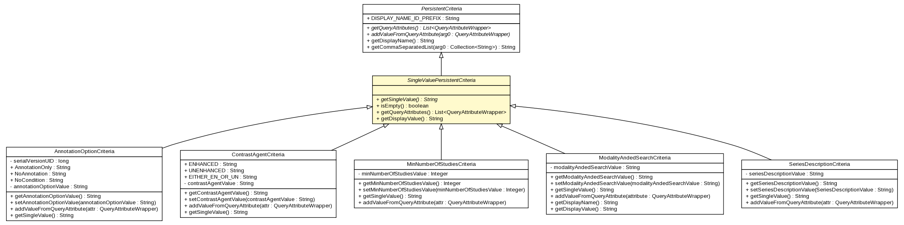

gov.nih.nci.ncia.criteria
Class SingleValuePersistentCriteria

java.lang.Object
 gov.nih.nci.ncia.criteria.Criteria
gov.nih.nci.ncia.criteria.PersistentCriteria
gov.nih.nci.ncia.criteria.SingleValuePersistentCriteria
gov.nih.nci.ncia.criteria.Criteria
gov.nih.nci.ncia.criteria.PersistentCriteria
gov.nih.nci.ncia.criteria.SingleValuePersistentCriteria
- All Implemented Interfaces:
- GridSearchCriteria, java.io.Serializable
- Direct Known Subclasses:
- AnnotationOptionCriteria, ContrastAgentCriteria, MinNumberOfStudiesCriteria, ModalityAndedSearchCriteria, SeriesDescriptionCriteria
public abstract class SingleValuePersistentCriteria
- extends gov.nih.nci.ncia.criteria.PersistentCriteria
Persistent criteria that is set to a single value (as opposed
to a list of values)
- See Also:
- Serialized Form
| Fields inherited from class gov.nih.nci.ncia.criteria.PersistentCriteria |
DISPLAY_NAME_ID_PREFIX |
|
Method Summary |
java.lang.String |
getDisplayValue()
Returns a string to display to the user representing
this criteria's value |
java.util.List<gov.nih.nci.ncia.querystorage.QueryAttributeWrapper> |
getQueryAttributes()
Converts the criteria's value into QueryAttributeWrappers |
abstract java.lang.String |
getSingleValue()
Returns the single value of this criteria |
boolean |
isEmpty()
Returns true if the single value is empty or null |
| Methods inherited from class gov.nih.nci.ncia.criteria.PersistentCriteria |
addValueFromQueryAttribute, getCommaSeparatedList, getDisplayName |
| Methods inherited from class java.lang.Object |
clone, equals, finalize, getClass, hashCode, notify, notifyAll, toString, wait, wait, wait |
SingleValuePersistentCriteria
public SingleValuePersistentCriteria()
getSingleValue
public abstract java.lang.String getSingleValue()
- Returns the single value of this criteria
- Returns:
isEmpty
public boolean isEmpty()
- Returns true if the single value is empty or null
- Specified by:
isEmpty in class gov.nih.nci.ncia.criteria.Criteria
getQueryAttributes
public java.util.List<gov.nih.nci.ncia.querystorage.QueryAttributeWrapper> getQueryAttributes()
- Converts the criteria's value into QueryAttributeWrappers
- Specified by:
getQueryAttributes in interface GridSearchCriteria- Specified by:
getQueryAttributes in class gov.nih.nci.ncia.criteria.PersistentCriteria
- Returns:
getDisplayValue
public java.lang.String getDisplayValue()
- Returns a string to display to the user representing
this criteria's value
- Specified by:
getDisplayValue in class gov.nih.nci.ncia.criteria.Criteria
- Returns: